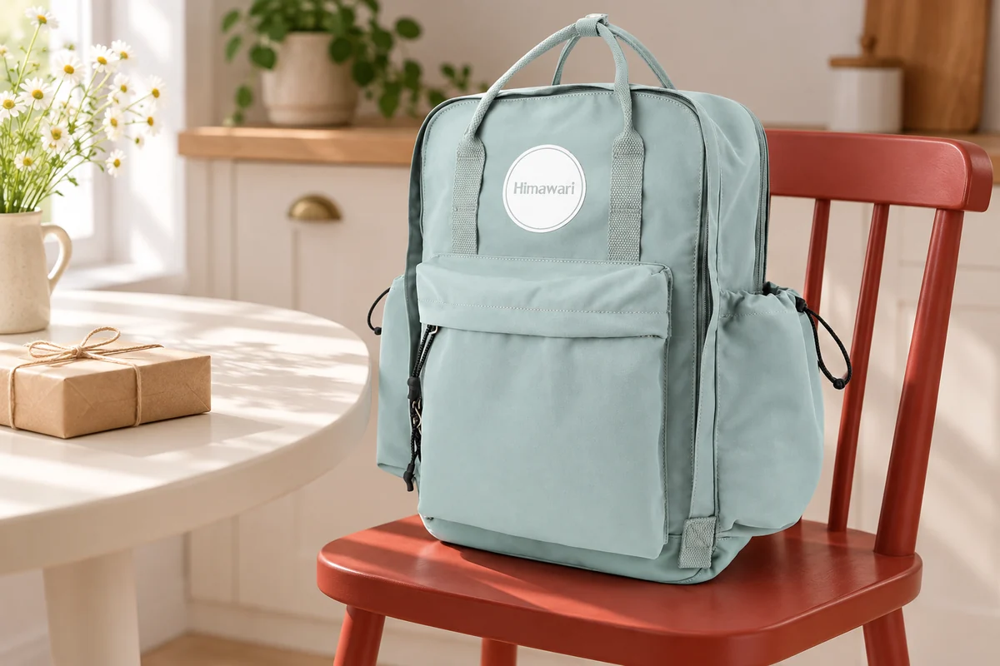

퇴근길 장보기에는 돌아올 짐을 먼저 나눈다

아침에는 여밈이 잘 닫히던 백팩도 퇴근길에 물건을 몇 개 더하면 정리할 자리가 줄어듭니다. 작은 물건 여러 개와 납작해 보이는 상자가 뜻밖에 서로 다른 방향으로 놓이기도 합니다. 출근 가방에 빈 공간이 있는지 보는 일에 더해 돌아올 때 어떤 짐이 생길지 정하면 계산대 앞에서 자료와 파우치를 모두 옮겨야 할 상황을 줄일 수 있습니다.
살 물건의 이름 옆에 형태를 적는다
장보기 목록에 부피와 놓을 방향을 함께 생각해 봅니다. 납작한 생활용품인지, 모서리가 있는 상자인지, 세워 이동해야 하는 물건인지에 따라 필요한 자리가 다릅니다. 정확한 포장 크기를 모르면 그 사실을 남겨 현장에서 확인합니다. 물건 이름만 보고 작은 묶음이라고 결정하지 않고 실제 포장을 본 뒤 이동 구성을 정할 수 있도록 여유를 둡니다. 구매할 수량도 돌아올 구성과 함께 조정할 수 있습니다.
가방 안에서는 업무 기기와 종이 자료처럼 유지할 자리를 먼저 정합니다. 구매품이 들어갈 빈틈을 찾으려고 기기와 서류를 가운데서 빼내 다른 소품과 섞기보다 새 짐을 따로 둘 계획을 세웁니다. 함께 넣을 수 있는 작은 물건과 별도 운반이 필요한 물건을 나눕니다. 포장 상태가 바뀌면 그 구분도 달라질 수 있으므로 목록에서 정한 계획을 현장의 실제 물건과 다시 대조합니다.
접이식 보조 가방을 가져간다면 접힌 크기만 보지 않고 펼쳐 상태를 확인합니다. 바닥과 손잡이를 보고 제품 안내에 맞는 사용 범위를 읽습니다. 평소 오래 접어둔 소품이라면 사용 전에 안쪽이 깨끗하고 마른 상태인지도 살펴봅니다. 작은 파우치 안에 들어간다는 점과 구매품을 옮길 수 있다는 판단은 따로 확인할 부분입니다. 준비할 보조 가방을 정한 뒤 접근하기 쉬운 위치에 둡니다.
계산대에서 바뀌는 짐의 모습
구매한 포장을 실제로 보고 배치를 정합니다. 단단한 상자와 병, 밖으로 나온 포장 부품이 기존 물건을 누르는지 살펴봅니다. 작은 구매품도 가방 여밈을 당겨야 들어가는 상태라면 그 양을 그대로 추가하지 않습니다. 구매량이나 별도 묶음을 조정할 수 있습니다. 음식이 있다면 필요한 보관과 운반 안내를 따로 확인하고 일반 백팩의 구조로 그 조건을 대신하지 않습니다.
계산대에서 사용할 카드나 휴대전화는 구매품을 넣기 전에 위치를 확인합니다. 보조 가방을 먼저 꺼낼 수 있도록 준비하면 결제 뒤 짐을 다시 열어 정리할 부담이 줄어듭니다. 포장할 공간이 마련되어 있다면 그 자리를 이용하고 다른 손님의 통로에 물건을 펼치지 않습니다. 급하게 모든 짐을 백팩에 넣으려고 하기보다 실제로 사용할 각 묶음을 정한 뒤 순서대로 담습니다.
Himawari No.1089와 함께 퇴근길 장보기를 계획할 때에는 아침에 넣은 짐이 저녁에 어디에 남을지 먼저 정합니다. 업무 자료는 자신의 보관 묶음에 유지하고, 구매품은 모양과 안내에 맞춰 나눕니다. 접이식 가방을 쓴다면 계산 전에 꺼낼 위치로 둡니다. 돌아올 때 백팩을 다시 가득 채우는 목표보다 두 묶음을 각각 정리해 들고 이동할 구성을 만드는 준비입니다.

보조 가방을 사용할 때에는 손잡이가 꼬였거나 바닥이 한쪽으로 처지지 않는지 봅니다. 손에 드는 물건이 늘면 출입구와 대중교통에서 무엇을 먼저 내려놓을지도 생각합니다. 한 손에 계속 무리가 느껴진다면 짐을 줄이거나 이동 방법을 바꿉니다. 가방의 여밈이 닫힌다는 이유만으로 현재 구성의 이동이 편하다고 판단하지 않고 실제로 들고 움직일 상태를 살펴봅니다.
매다는 방식으로 공간을 늘리기 전에
구매품이 든 가방을 백팩의 지퍼 장식이나 임의의 고리에 걸어 손을 비우는 방법을 택하기 전에 각 제품의 원래 사용 방식을 봅니다. 장식과 운반 연결부는 같은 용도라고 볼 수 없습니다. 걸을 때 흔들리는 묶음이 주변 사람이나 물건과 닿는지도 생각해야 합니다. 각 가방의 손잡이와 안내된 착용 방식을 이용하고, 여러 묶음을 한 구조에 몰아 매달아 공간을 보충하지 않습니다.
가상의 계획으로 작은 생활용품과 책 모양의 상자를 살 예정이라면 아침에 두 구매품을 모두 백팩에 넣는 결론까지 내릴 필요는 없습니다. 상자를 현장에서 보고 보조 가방으로 나눌지 결정할 수 있습니다. 이 계획은 특정 제품의 수납을 시험한 결과가 아닙니다. 기존 자료의 자리를 남기고 예상 밖의 포장을 만났을 때 선택할 방법을 마련하는 예입니다. 필요하다면 그날 구매할 양도 바꿀 수 있습니다.
퇴근 후 다른 약속이 더 있다면 구매품을 가진 시간도 함께 고려합니다. 내려놓을 장소나 잠시 보관할 자리가 있는지, 계속 들고 다녀야 하는지 살펴봅니다. 음식이나 관리가 필요한 물건의 조건은 해당 물품의 안내를 따릅니다. 장보기 장소가 가깝다는 이유로 뒤의 일정을 생략해 생각하지 않고 실제 귀가까지의 동선에서 어떻게 나눠 운반할지 정하면 됩니다.
귀가하면 구매품부터 각자 보관할 곳으로 옮깁니다. 보조 가방을 비워 내부 상태를 확인하고 제품 안내에 맞춰 정리합니다. 젖거나 오염된 상태를 바로 접어 백팩에 되넣지 않습니다. 업무 자료와 기기도 원래 묶음이 유지되었는지 봅니다. 계산대에서 급히 옮긴 작은 소품이 있으면 평소 위치로 돌려놓으면 다음 아침에 찾을 수 있습니다.
다음 장보기에는 오늘 실제로 따로 들어야 했던 포장과 꺼내기 어려웠던 묶음을 참고할 수 있습니다. 장보기 목록의 이름 옆에 형태를 남겨두면 다시 같은 물건을 살 때 계획이 구체적입니다. 보조 가방을 쓰지 않은 날에는 그것도 기록할 선택이 됩니다. 오늘 구매품을 모두 꺼내고 깨끗하게 정리한 이동 소품만 가방에 돌아오면 다음 퇴근길을 위한 준비가 남습니다.